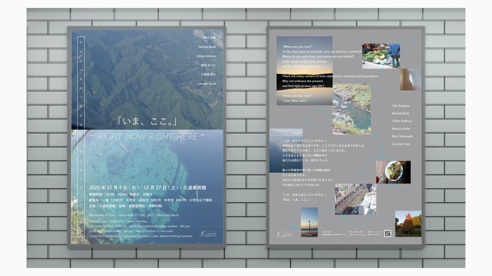
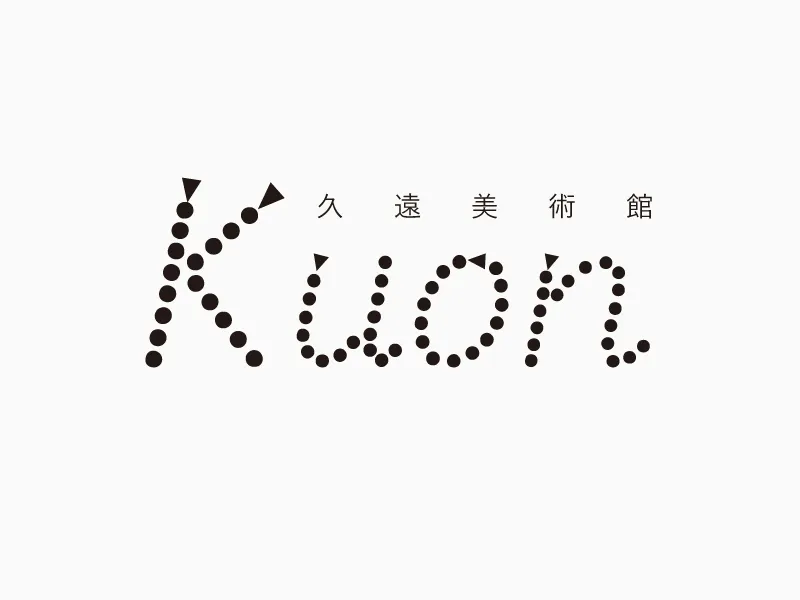
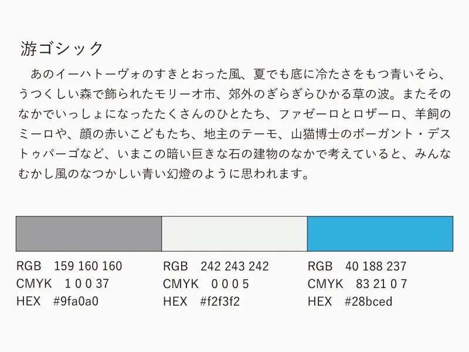

概要
写真展「いま、ここ。」の告知を目的としたチラシデザインを制作しました。
「せわしなく過ぎる時間の中で、いまに意識を向ける」というテーマを、写真と言葉のレイヤーで構成しました。情報の羅列ではなく、鑑賞体験の入口となるビジュアルを目指しています。静かな余白と空気感を重視し、写真展そのものの温度を感じられるように意識しました。

- SNSでの情報発信にとどまり、SNSをあまり見ない層の来館が少ない
- 普段は中高年の来館者が多い美術館のため、写真やアートに興味がある若い層に認知されていない
- 写真展の認知を拡大し、来館を促進する
- 美術館ブランドの文化的ポジションを強化する
- 写真、アート、思想性のある展示に関心がある20代後半～40代の男女
- 忙しい日常の中で立ち止まる時間を求めている人
- SNSよりも体験そのものを大切にする人


デザイン設計
表面は空撮ビジュアルを大胆に使用し、時間を俯瞰する視点を表現しました。空と水という対照的な要素を上下に配置することで、時間の流れを視覚化しています。広がりのある写真に対して、左側に枠線を重ね、地図上のピンのように今いる場所に目を向けるきっかけとして機能させました。裏面では写真を不規則に配置し、ゆるやかな曲線で結ぶことで、時間や記憶が偶然や重なりの中で存在していることを表しています。グレーの背景で写真とテキストを際立たせながら、全体を淡いトーンで統一することで、主張しすぎない解釈の余白を残しました。
情報設計
文字のジャンプ率を明確にし、タイトルとメインビジュアル、詳細情報の順に視線が移る構造にしました。国籍を問わない来館を想定しているため、日英併記にしました。写真の配置に合わせてテキストの位置を調整し、視線誘導と可読性を両立させました。アクセス情報とQRコードを下部に集約し、世界観を損なわずに行動を促しています。情緒的な余韻を保ちながらも、来館に必要な情報が過不足なく伝わるバランスを目指しました。
制作の経緯
普段から写真を撮ることが好きで、その時間が自分と向き合うきっかけになっています。せわしなく過ぎていく日々の中でも、写真を通して日常にある小さな幸せや何気ない瞬間に気づくことができると感じました。そうした一瞬に意識を向けることで、人は少しだけ呼吸を取り戻せるのではないかと思っています。意識して立ち止まらなければ見過ごしてしまうような「いま」に目を向けるきっかけとして、写真展「いま、ここ。」が生まれました。